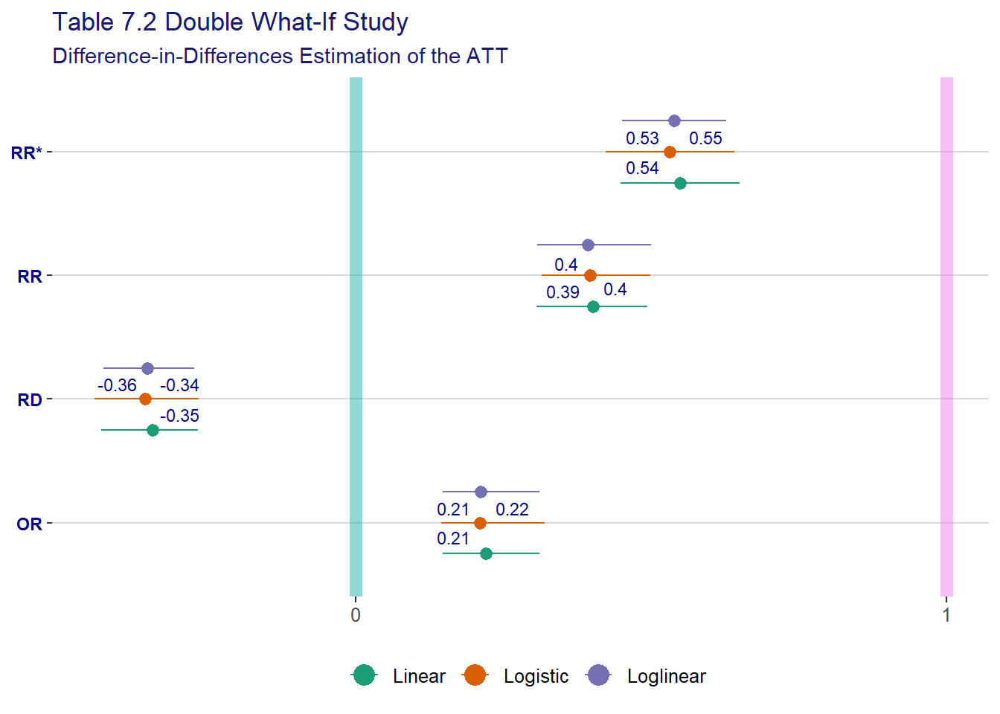

library(conflicted)
library(dplyr)
library(fciR)
options(dplyr.summarise.inform = FALSE)
conflicts_prefer(dplyr::filter)[conflicted] Will prefer dplyr::filter over any other package.library(conflicted)
library(dplyr)
library(fciR)
options(dplyr.summarise.inform = FALSE)
conflicts_prefer(dplyr::filter)[conflicted] Will prefer dplyr::filter over any other package.The method relies on consistency as well as assumption A1:
\[ \begin{align*} &E(Y_1(0) \mid A=1) - E(Y_1(0) \mid A=1) = \\ &E(Y_0(0) \mid A=1) - E(Y_0(0) \mid A=1) \end{align*} \]
That assumption is interpreted as : If assume that no treatment was applied in “year” 1 (nothing happened in year 1) than we have the same results as in the base “year”.
also called additive equi-confounding […]. The target of estimation is the linear ATT presented in chapter 6 as a risk difference
\[ \text{Linear ATT:} \: E(Y_1(1) - Y_1(0) \mid A=1) \]
which is interpreted as *what is the the average difference between \(Y_1(1)\) and \(Y_1(0)\) if they all treated. For the example of the bank’s NIM, what is the average difference between the banks’ NIM in NIRP ad non-NIRP economy assuming they are all subjected to the NIRP policy, that is wihout the impact of the NIRP policy.
and we have
\[ \begin{align*} & E(Y_1(1) - Y_1(0)) \mid A=1) = \\ & E(Y_1(1) \mid A=1) - E(Y_1(0) \mid A=1) = \\ & [E(Y_1(1) \mid A=1) - E(Y_1(0) \mid A=1)] - [E(Y_1(0) \mid A=0) - E(Y_1(0) \mid A=0)] = \\ & [E(Y_1(1) \mid A=1) - E(Y_1(0) \mid A=0)] - [E(Y_1(0) \mid A=1) - E(Y_1(0) \mid A=0)] = \\ &\text{consistency assumption} \\ & [E(Y_1 \mid A=1) - E(Y_1 \mid A=0)] - [E(Y_1(0) \mid A=1) - E(Y_1(0) \mid A=0)] = \\ &\text{assumption A1, additive equi-confounding} \\ &\text{i.e. assuming that if nothing happens in year 1, then we can use the results of year 0} \\ & [E(Y_1 \mid A=1) - E(Y_1 \mid A=0)] - [E(Y_0 \mid A=1) - E(Y_0 \mid A=0)] \end{align*} \]
we can therefore estimate the linear ATT via the difference in differences of averages
\[ \begin{align*} &[\hat{E}(Y_1 \mid A=1) - \hat{E}(Y_1 \mid A=0)] - [\hat{E}(Y_0 \mid A=1) - \hat{E}(Y_0 \mid A=0)]= \\ &[\hat{E}(Y_1 \mid A=1) - \hat{E}(Y_0 \mid A=1)] - [\hat{E}(Y_1 \mid A=0) - \hat{E}(Y_0 \mid A=0)]= \\ &[\hat{E}(Y_1 - Y_0 \mid A=1)] - [\hat{E}(Y_1 - Y_0 \mid A=0)] \end{align*} \]
We can also compute the DiD via the linear model
\[ E(Y_t \mid A) = \alpha_0 + \alpha_1 t + \alpha_2 A + \beta A * t \]
and therefore
\[ \begin{align*} \beta &= [E(Y_1 \mid A=1) - E(Y_0 \mid A=1)] - [E(Y_1 \mid A=0) - E(Y_0 \mid A=0)] \\ &= (\alpha_0 + \alpha_1 + \alpha_2 + \beta) - (\alpha_0 + \alpha_2) - ((\alpha_0 + \alpha_2) - (\alpha_0)) \end{align*} \]
As we can estimate \(E(Y(1) \mid A=1)\) directly via \(E(Y_1 \mid A=1)\), we can also recover \(E(Y(0) \mid A=1)\) via \(E(Y_1 \mid A=1) - \beta\)
because from above we have
\[ \begin{align*} \beta &= E(Y_1(1) - Y_1(0)) \mid A=1) \\ &= E(Y_1(1) \mid A=1) - E(Y_1(0) \mid A=1) \\ &= E(Y_1 \mid A=1) - E(Y_1(0) \mid A=1) \\ &\therefore \\ E(Y_1(0) \mid A=1)& = E(Y_1 \mid A=1) - \beta \end{align*} \]
The method relies on consistency as well as assumption A2:
\[ \begin{align*} \frac{E(Y_1(0) \mid A=1)}{E(Y_1(0) \mid A=1)} = \frac{E(Y_0(0) \mid A=1)}{E(Y_0(0) \mid A=1)} \end{align*} \]
The method relies on consistency as well as assumption A3:
\[ \begin{align*} logit(E(Y_1(0) \mid A=1)) - logit(E(Y_1(0) \mid A=1)) = logit(E(Y_0(0) \mid A=1)) - logit(E(Y_0(0) \mid A=1)) \end{align*} \]
The functions used for DID estimations are fciR::did_linear(), fciR::did_loglinear and fciR::logistic.
doublewhatifdatThe DiD estimator with the linear model
dwhatif.did.lin <- fciR::boot_est(
doublewhatifdat, func = fciR::did_linear,
times = 100, alpha = 0.05, transf = "exp",
terms = c("EY0A1", "EY1", "RD", "RR", "RR*", "OR"),
formula = VL1 ~ A + VL0, exposure.name = "A", confound.names = "VL0")The DiD estimator with the loglinear model
dwhatif.did.loglin <- fciR::boot_est(
doublewhatifdat, func = fciR::did_loglinear,
times = 100, alpha = 0.05, transf = "exp",
terms = c("EY0A1", "EY1", "RD", "RR", "RR*", "OR"),
formula = VL1 ~ A + VL0, exposure.name = "A", confound.names = "VL0")The DiD estimator with the logistic model
dwhatif.did.logit <- fciR::boot_est(
doublewhatifdat, func = fciR::did_logistic,
times = 100, alpha = 0.05, transf = "exp",
terms = c("EY0A1", "EY1", "RD", "RR", "RR*", "OR"),
formula = VL1 ~ A + VL0, exposure.name = "A", confound.names = "VL0")verify the results
data("fci_tbl_07_02", package = "fciR")
bb_dwhatif <- fci_tbl_07_02
bb_dwhatif model term Truth .estimate .lower .upper .alpha .method
1 All E(VL1|A=1) 0.199 0.231 0.179 0.282 0.05 norm
2 Linear EY0A1 0.559 0.586 0.508 0.664 0.05 norm
3 Loglinear EY0A1 0.559 0.577 0.498 0.656 0.05 norm
4 Logistic EY0A1 0.559 0.592 0.513 0.671 0.05 norm
5 Linear RD -0.360 -0.355 -0.441 -0.270 0.05 norm
6 Loglinear RD -0.360 -0.346 -0.431 -0.262 0.05 norm
7 Logistic RD -0.360 -0.362 -0.447 -0.276 0.05 norm
8 Linear RR 0.356 0.394 0.309 0.500 0.05 norm
9 Loglinear RR 0.356 0.400 0.315 0.508 0.05 norm
10 Logistic RR 0.356 0.390 0.306 0.496 0.05 norm
11 Linear OR 0.196 0.212 0.142 0.315 0.05 norm
12 Loglinear OR 0.196 0.220 0.149 0.325 0.05 norm
13 Logistic OR 0.196 0.206 0.139 0.307 0.05 normgt_measures_rowgrp(
bb_dwhatif,
rowgroup = "term",
rowname = "model",
title = paste("Table 7.2", "Double What-If Study"),
subtitle = paste("Difference-in-Differences Estimation of the ATT",
sep = "<br>")
)| Table 7.2 Double What-If Study | |||
| Difference-in-Differences Estimation of the ATT | |||
| Truth | Estimate | CI1 | |
|---|---|---|---|
| E(VL1|A=1) | |||
| All | 0.199 | 0.231 | (0.179, 0.282) |
| EY0A1 | |||
| Linear | 0.559 | 0.586 | (0.508, 0.664) |
| Loglinear | 0.559 | 0.577 | (0.498, 0.656) |
| Logistic | 0.559 | 0.592 | (0.513, 0.671) |
| RD | |||
| Linear | -0.360 | -0.355 | (-0.441, -0.27) |
| Loglinear | -0.360 | -0.346 | (-0.431, -0.262) |
| Logistic | -0.360 | -0.362 | (-0.447, -0.276) |
| RR | |||
| Linear | 0.356 | 0.394 | (0.309, 0.5) |
| Loglinear | 0.356 | 0.400 | (0.315, 0.508) |
| Logistic | 0.356 | 0.390 | (0.306, 0.496) |
| OR | |||
| Linear | 0.196 | 0.212 | (0.142, 0.315) |
| Loglinear | 0.196 | 0.220 | (0.149, 0.325) |
| Logistic | 0.196 | 0.206 | (0.139, 0.307) |
| Fundamentals of Causal Inference, Babette A. Brumback, 2022 | |||
| 1 95% confidence interval | |||
and the results using the fciR package are identical.
tbl_7.2 <- rbind(
data.frame(
model = "Linear",
dwhatif.did.lin),
data.frame(
model = "Loglinear",
dwhatif.did.loglin),
data.frame(
model = "Logistic",
dwhatif.did.logit))
gt_measures_rowgrp(tbl_7.2,
rowgroup = "term",
rowname = "model",
title = paste("Table 7.2<em>(by FL)</em>", "Double What-If Study", sep = "<br>"),
subtitle = paste("Difference-in-Differences Estimation of the ATT",
sep = "<br>")
)| Table 7.2(by FL) Double What-If Study |
||
| Difference-in-Differences Estimation of the ATT | ||
| CI1 | Estimate | |
|---|---|---|
| EY0A1 | ||
| Linear | (0.499, 0.644) | 0.577 |
| Loglinear | (0.52, 0.653) | 0.584 |
| Logistic | (0.508, 0.68) | 0.592 |
| EY1 | ||
| Linear | (0.186, 0.285) | 0.233 |
| Loglinear | (0.179, 0.277) | 0.231 |
| Logistic | (0.184, 0.28) | 0.236 |
| RD | ||
| Linear | (-0.431, -0.267) | -0.344 |
| Loglinear | (-0.427, -0.273) | -0.353 |
| Logistic | (-0.441, -0.265) | -0.356 |
| RR | ||
| Linear | (0.306, 0.494) | 0.402 |
| Loglinear | (0.308, 0.5) | 0.394 |
| Logistic | (0.315, 0.499) | 0.397 |
| RR* | ||
| Linear | (0.448, 0.65) | 0.549 |
| Loglinear | (0.451, 0.627) | 0.540 |
| Logistic | (0.424, 0.641) | 0.531 |
| OR | ||
| Linear | (0.148, 0.311) | 0.221 |
| Loglinear | (0.148, 0.311) | 0.213 |
| Logistic | (0.145, 0.32) | 0.211 |
| Fundamentals of Causal Inference, Babette A. Brumback, 2022 | ||
| 1 95% confidence interval | ||
fciR::ggp_measures_groups(tbl_7.2, group = "model",
title = paste("Table 7.2", "Double What-If Study"),
subtitle = paste("Difference-in-Differences Estimation of the ATT",
sep = "<br>"))